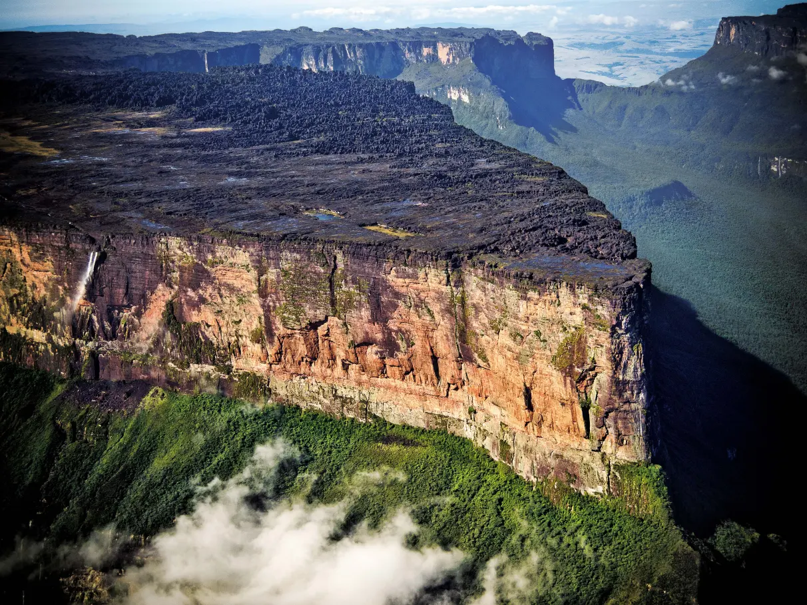

Roraima é um estado localizado na região Norte do Brasil, conhecido por suas paisagens de cerrado, florestas e rios. Sua capital é Boa Vista, uma cidade que cresce e se desenvolve constantemente. A economia de Roraima é baseada na agricultura, na pecuária e na mineração. O governador de Roraima atualmente é Antonio Denarium, que tem trabalhado para promover o desenvolvimento sustentável, a infraestrutura e o bem-estar da população do estado.
